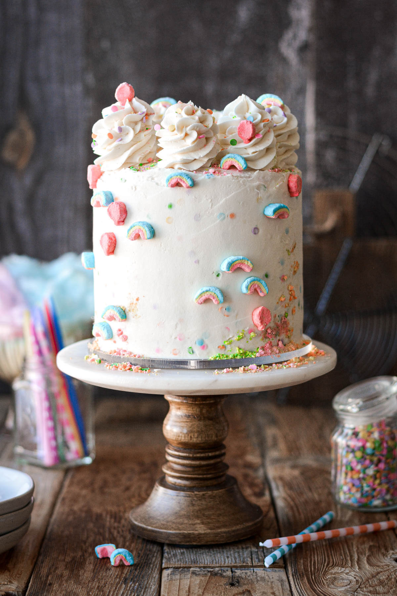

Home
cake

Description
A soft and moist vanilla cake with a rich and buttery flavor, perfect for any celebration or just as a sweet treat.
Ingredients
- Flour
- Baking powder
- Salt
- Butter
- Sugar
- Eggs
- Milk
- Vanilla extract
Steps
- Prepare Dry Ingredients: In a bowl, mix flour, baking powder, and salt.
- Butter and Sugar: In another bowl, beat the butter and sugar until light and fluffy.
- Add Eggs and Vanilla: Mix in the eggs one at a time, then add the vanilla extract.
- Combine Wet and Dry Ingredients: Gradually add the dry ingredients to the wet mixture, alternating with milk, starting and ending with the dry ingredients.
- Bake: Pour the batter into a greased and floured cake pan. Bake in a preheated oven at 350°F (175°C) for about 30-35 minutes, or until a toothpick inserted into the center comes out clean.
- Cool and Frost: Let the cake cool in the pan for a few minutes, then transfer to a wire rack to cool completely. Frost with your favorite icing.